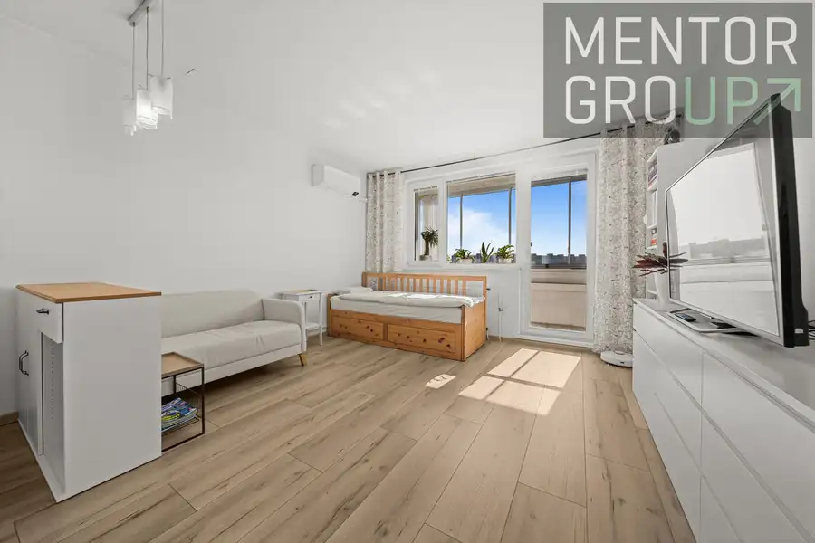

Na predaj stavebný pozemok v obci Pernek
Pernek
- Plocha1658 m²
- VlastníctvoOsobné
O nehnuteľnosti
Realitná kancelária Mentor Group Real Estate ponúka na predaj pozemok so stavebným povolením v pokojnej obci Pernek s výmerou 1 658 m², Pozemok sa nachádza v atraktívnej lokalite s nádherným výhľadom na okolitú prírodu, ideálny pre výstavbu rodinného domu alebo rekreačného bývania.V prípade záujmu je k domu aj kompletná realizačná dokumentácia. Stavebné povolenie je platné do roku 12/2027. Rozmery pozemku sú 28 m² x 60 m².Pozemok má výbornú rozlohu, ktorá poskytuje dostatok priestoru na realizáciu vašich predstáv o bývaní, záhrade či oddychovej zóne. Na pozemku sa nachádzajú inžinierske siete - prípojka elektriny s elektromerom, vodovodná prípojka s vodomernou šachtou a vodomerom, plynová prípojka ukončená plynomernou skrinkou. Obec Pernek ponúka príjemné a tiché prostredie s dobrou dostupnosťou do okolitých miest a zároveň blízkosť prírody Malých Karpát, čo ocenia najmä milovníci turistiky a relaxu.Ak hľadáte ideálne miesto pre váš nový domov s krásnym výhľadom a pokojnou atmosférou, tento pozemok je tou správnou voľbou.CENA A SERVISV cene je zahrnutý kompletný právny a administratívny servis – od prípravy dokumentov až po úspešný prevod vlastníckych práv. Bez starostí, bez skrytých poplatkov.Zaujalo vás toto výnimočné bývanie?Radi vás osobne prevedieme celým projektom, ukážeme dostupné možnosti a zodpovieme všetky otázky.Stačí nás kontaktovať a dohodneme si termín osobného stretnutia.__________________Jana Stašiaková☏ 0903 777 067jana.stasiakova@mentorgroup.sk• Páči sa Vám prezentácia tejto nehnuteľnosti?• virtuálna prehliadka• sprostredkovanie najvýhodnejšej hypotéky na trhu• VIP servis pre každého klientaMáte v pláne predať alebo prenajať Vašu nehnuteľnosť? KONTAKTUJTE MA a rada Vám pomôžem.
Parametre
| Druh | Pozemok pre rodinné domy |
|---|---|
| Dátum zverejnenia | 13. 5. 2026 |
| Elektrina | Na pozemku |
| Odpadové vody | Na pozemku - Čistička odpadových vôd, Na pozemku - Kanalizácia |
| Plocha pozemku | 1658 m² |
| Plyn | Na pozemku |
| Terén pozemku | Iný |
| Typ | Predaj |
| Vlastníctvo | Osobné |
| Voda | Na pozemku, Na pozemku - Studňa |
Kde to je


Mohlo by Vás zaujímať
 BytNové10
206 000 €Výnimočné bývanie v Slnečniciach - na predaj 1-izbový byt vo Viladomoch
Petržalka, Bratislava
1-izbový35.11 m²3. podlažie
Realitná kancelária Mentor Group Real Estate ponúka na predaj štýlový 1-izbový byt v obľúbenom projekte Slnečnice – Viladomy, Žltá 11, Bratislava –…
BytNové10
206 000 €Výnimočné bývanie v Slnečniciach - na predaj 1-izbový byt vo Viladomoch
Petržalka, Bratislava
1-izbový35.11 m²3. podlažie
Realitná kancelária Mentor Group Real Estate ponúka na predaj štýlový 1-izbový byt v obľúbenom projekte Slnečnice – Viladomy, Žltá 11, Bratislava –…
 BytNové10
489 000 €Ponúkame na predaj luxusný a moderne riešený 3-izbový byt Slnečnice Viladomy - Fialová ul.
Petržalka, Bratislava
3-izbový88.83 m²5. podlažie
Hľadáte bývanie, kde sa nebudete cítiť stiesnene?Realitná kancelária Mentor Group Real Estate ponúka na predaj krásny, veľkometrážny, priestranný 3…
BytNové10
489 000 €Ponúkame na predaj luxusný a moderne riešený 3-izbový byt Slnečnice Viladomy - Fialová ul.
Petržalka, Bratislava
3-izbový88.83 m²5. podlažie
Hľadáte bývanie, kde sa nebudete cítiť stiesnene?Realitná kancelária Mentor Group Real Estate ponúka na predaj krásny, veľkometrážny, priestranný 3…

BytNové10 169 900 €Na predaj útulná garsónka na Fedinovej ulici - Petržalka Petržalka, Bratislava 28.8 m²7. podlažie Realitná kancelária Mentor Group Real Estate ponúka na predaj útulnú a praktickú garsónku na Fedinovej ulici v Petržalke, vhodná nielen na vlastné…